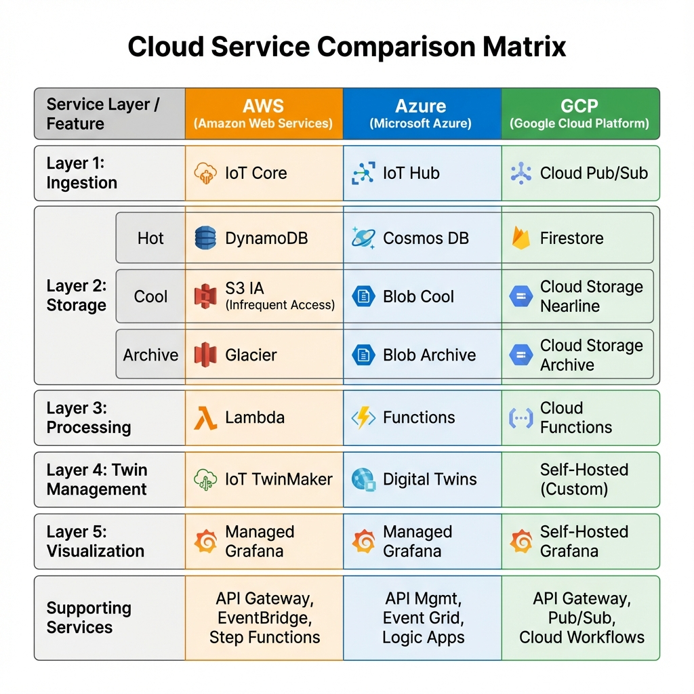

Architecture Overview
High-level design of the Twin2Clouds optimization engine and its integration within the Digital Twin ecosystem.
System Context
Twin2Clouds sits between the user's requirements and the infrastructure deployment. It transforms abstract requirements into a concrete, cost-optimized deployment plan.
Key Outputs:
config_providers.json: Maps each architectural layer (L1-L5) to the cheapest cloud provider (AWS, Azure, or GCP).config.json: Global parameters (e.g., storage retention periods).
System Overview
Twin2Clouds implements a 5-layer Digital Twin architecture designed to optimize cost by selecting the most cost-effective cloud provider for each architectural layer. The system evaluates AWS, Azure, and Google Cloud Platform (GCP) services and determines the optimal configuration based on given workload parameters.

Architecture Layers
Layer 1: Data Acquisition & Processing
Purpose: Ingest and process telemetry data from IoT devices.
Services:
- AWS: IoT Core
- Azure: IoT Hub
- GCP: Cloud IoT Core
Cost Factors:
- Number of connected devices
- Message frequency (messages per month)
- Data ingestion volume
- Rules engine operations
Layer 2: Storage
Purpose: Store telemetry data with different access patterns and retention policies.
Storage is divided into three tiers based on access frequency:
Hot Storage (Frequent Access)
Services:
- AWS: DynamoDB
- Azure: CosmosDB
- GCP: Firestore
Use Case: Recent data requiring low-latency access (e.g., last 1-3 months)
Cool Storage (Infrequent Access)
Services:
- AWS: S3 Infrequent Access
- Azure: Blob Storage (Cool Tier)
- GCP: Cloud Storage (Nearline)
Use Case: Historical data accessed occasionally (e.g., 3-12 months)
Archive Storage (Rare Access)
Services:
- AWS: S3 Glacier Deep Archive
- Azure: Blob Storage (Archive Tier)
- GCP: Cloud Storage (Archive)
Use Case: Long-term archival data (e.g., 12+ months)
Layer 3: Data Processing & Integration
Purpose: Process, transform, and route data between storage tiers.
Services:
- AWS: Lambda
- Azure: Azure Functions
- GCP: Cloud Functions
Cost Factors:
- Number of function invocations
- Compute time (GB-seconds)
- Memory allocation
Note: Layer 3 is coupled with the provider selected for Layer 2 Hot Storage to minimize data transfer costs.
Layer 4: Twin Management
Purpose: Manage 3D models and digital twin representations.
Services:
- AWS: IoT TwinMaker
- Azure: Azure Digital Twins
- GCP: Self-hosted equivalent
Cost Factors:
- Number of 3D entities
- API calls for data access
- Query operations
Note: This layer is optional and only included if 3D models are required.
Layer 5: Data Visualization
Purpose: Provide dashboards and visualization for operators.
Services:
- AWS: Amazon Managed Grafana
- Azure: Azure Managed Grafana
- GCP: Self-hosted Grafana (Note: Cost model is currently a placeholder)
Cost Factors:
- Number of editor users
- Number of viewer users
- Dashboard refresh frequency
- Active hours per day
Supporting Services
Beyond the core 5 layers, the architecture relies on essential supporting services to ensure security, scalability, and orchestration.
Data Access & Security
Purpose: Secure entry points for external applications and user management.
- AWS API Gateway: Managed REST APIs.
- Azure API Management: API gateway and portal.
- GCP API Gateway: Fully managed gateway.
Event Bus
Purpose: Decoupling services via asynchronous event messaging.
- AWS EventBridge: Serverless event bus.
- Azure Event Grid: Managed event routing.
- GCP Pub/Sub: Global messaging and event streaming.
Orchestration
Purpose: Managing stateful workflows and complex business logic.
- AWS Step Functions: Visual workflow orchestration.
- Azure Logic Apps: Automated workflows and integrations.
- GCP Cloud Workflows: Orchestrate microservices.
Service Selection Rationale
Specific cloud services were chosen over alternatives within the same provider to optimize for cost, scalability, and operational simplicity. The following tables detail the decision-making process for both core and supporting layers.
AWS
| Selected Service | Alternative Considered | Reason for Selection |
|---|---|---|
| IoT Core | Kinesis Data Streams | IoT-Specific Features: IoT Core provides a native MQTT broker, Device Shadows, and a Registry, which are essential for managing millions of intermittent device connections. Kinesis is a raw data streaming service that lacks these device management capabilities and would require building a custom MQTT frontend. |
| DynamoDB | RDS / Aurora | Schema Flexibility & Scaling: Telemetry data often varies in structure. DynamoDB's NoSQL model handles this flexibility effortlessly. Furthermore, its serverless provisioned/on-demand capacity scales to zero or millions of requests without the connection limit bottlenecks or idle instance costs associated with relational databases like RDS. |
| Lambda | EC2 / Fargate | Event-Driven Efficiency: Lambda incurs zero cost when idle, making it perfect for sporadic IoT events. It integrates natively with S3 and DynamoDB triggers. Using EC2 or Fargate would require maintaining running instances (incurring minimum costs) and managing scaling rules, adding unnecessary operational overhead. |
| IoT TwinMaker | IoT SiteWise | 3D Context: TwinMaker is specifically designed to bind 3D models to IoT data, enabling spatial visualization. SiteWise focuses on hierarchical asset modeling and metrics but lacks the native 3D scene composition capabilities required for a visual digital twin. |
| Managed Grafana | QuickSight | Operational vs. BI: Grafana is optimized for real-time operational monitoring with high-frequency refresh rates, which is critical for digital twins. QuickSight is a Business Intelligence (BI) tool better suited for historical reporting and aggregations. |
| API Gateway | Application Load Balancer (ALB) | API Management: While ALB handles HTTP traffic, API Gateway provides essential API-first features like usage plans, API keys, throttling, and direct integration with Lambda and other AWS services without needing an intermediate compute layer. |
| EventBridge | SNS (Simple Notification Service) | Content Filtering & Integration: EventBridge offers advanced content-based filtering and a schema registry, allowing for more complex event routing patterns than SNS. It also has deeper integration with SaaS partners and AWS services for building decoupled event-driven architectures. |
| Step Functions | Lambda Orchestration | State Management: Orchestrating complex workflows inside a single Lambda function leads to "spaghetti code" and timeout risks. Step Functions provides a visual state machine with built-in error handling, retries, and long-running execution capabilities, separating workflow logic from business logic. |
Azure
| Selected Service | Alternative Considered | Reason for Selection |
|---|---|---|
| IoT Hub | Event Hubs | Bi-Directional Communication: IoT Hub is designed specifically for IoT, supporting Cloud-to-Device (C2D) messaging and device twins. Event Hubs is a high-throughput big data ingestion service (similar to Kafka) but lacks the ability to send commands back to devices or manage device identity securely. |
| Cosmos DB | SQL Database / Table Storage | Global Scale & Performance: Cosmos DB offers turnkey global distribution and single-digit millisecond latency guarantees. While Table Storage is cheaper, it lacks the indexing capabilities and performance SLAs required for real-time digital twin queries. SQL Database struggles with the massive write throughput of telemetry without complex sharding. |
| Azure Functions | App Service | Consumption Pricing: The Consumption plan allows costs to scale to zero when no events are processing. App Service plans require a dedicated VM (even if small), incurring fixed monthly costs regardless of traffic, which is less efficient for event-driven IoT workloads. |
| Azure Digital Twins | Cosmos DB (Graph API) | Domain Modeling: ADT provides a native Digital Twins Definition Language (DTDL) and a live execution environment for updating the graph based on events. Building a comparable twin engine on raw Cosmos DB Graph API would require significant custom development for state management and event propagation. |
| Managed Grafana | Power BI | Real-Time Visualization: Similar to AWS, Grafana is chosen for its superior handling of real-time time-series data and operational dashboards. Power BI is a powerful enterprise reporting tool but is less agile for the sub-second updates often desired in twin visualizations. |
| API Management | Application Gateway | Full Lifecycle Management: API Management provides a developer portal, policy enforcement (rate limiting, auth), and versioning out of the box. Application Gateway is primarily a Layer 7 load balancer and lacks these developer-centric API governance features. |
| Event Grid | Service Bus | Reactive vs. Enterprise Messaging: Event Grid is designed for high-scale, low-latency "push" event routing (reactive). Service Bus is for "pull" enterprise messaging (queues/topics) with transactional guarantees. For triggering functions based on state changes, Event Grid's lightweight push model is more efficient and cost-effective. |
| Logic Apps | Durable Functions | Visual Integration: Logic Apps offers a low-code, visual designer with hundreds of pre-built connectors (Office 365, Salesforce, etc.), making it superior for integration-heavy workflows. Durable Functions requires writing code for orchestration, which is better for complex compute problems but overkill for standard business process automation. |
Google Cloud
| Selected Service | Alternative Considered | Reason for Selection |
|---|---|---|
| Cloud Pub/Sub | Direct HTTP Ingestion | Decoupling & Reliability: Direct HTTP ingestion couples the device directly to the processing logic, creating a bottleneck and risk of data loss during spikes. Pub/Sub acts as a global, durable buffer that absorbs traffic spikes and allows multiple downstream services to consume the same data stream independently. |
| Firestore | Cloud SQL / Bigtable | Serverless & Mobile-First: Firestore provides a serverless document model that scales automatically. Cloud SQL requires instance management and connection pooling. Bigtable is excellent for petabyte-scale data but has a high minimum cost (nodes) that makes it prohibitively expensive for smaller or variable digital twin deployments. |
| Cloud Functions | Cloud Run | Simplicity: For simple, single-purpose event handlers (e.g., "on database write, do X"), Cloud Functions offers a simpler deployment model with less configuration than containerizing an application for Cloud Run. (Note: Cloud Run is a valid alternative for more complex microservices). |
| Self-Hosted Custom | Supply Chain Twin | Flexibility: GCP lacks a general-purpose Digital Twin service. Industry-specific solutions like Supply Chain Twin are too rigid for general use cases. A custom solution using Firestore and Cloud Functions provides the necessary flexibility to model any domain. |
| Self-Hosted Grafana | Cloud Monitoring / Looker | Unified Visualization: Cloud Monitoring is infrastructure-focused, and Looker is for BI. Self-hosting Grafana (e.g., on Cloud Run) allows for a unified, customizable operational dashboard that matches the capabilities of the managed Grafana services on AWS and Azure. |
| API Gateway | Cloud Endpoints | Managed Service: API Gateway is a fully managed service that is easier to set up for serverless backends (Functions, Run). Cloud Endpoints often requires deploying an ESP (Extensible Service Proxy) container sidecar, adding operational complexity for simple serverless APIs. |
| Cloud Workflows | Cloud Composer (Airflow) | Low Latency Orchestration: Cloud Workflows is serverless, has no cold starts, and is designed for low-latency service orchestration. Cloud Composer is a managed Airflow environment designed for heavy data engineering pipelines; it is slow to start, expensive (requires running environment), and overkill for API orchestration. |
Cloud Provider Service Mapping
The following table shows how cloud services are mapped across providers for each layer:
Cost Optimization Strategy
Twin2Clouds uses a sophisticated decision engine to determine the optimal cloud provider for each layer:
Layer 1 & 3 Selection
The system selects the provider that minimizes the combined cost of data acquisition (L1) and data transfer to the selected hot storage provider. Layer 3 is automatically coupled with the Layer 2 hot storage provider to minimize data movement costs.
Layer 2 Storage Path
The storage layers (Hot → Cool → Archive) are optimized using a graph-based path-finding algorithm that considers:
- Storage costs per GB
- Data transfer costs between tiers
- Cross-cloud egress charges
- Data retrieval prices
The system finds the cheapest path through all storage tiers, allowing mixing providers if beneficial (e.g., AWS Hot → GCP Cool → AWS Archive).
Layer 4 & 5 Selection
Twin Management and Visualization layers are selected independently based on their individual costs since they don't have significant data dependencies on other layers.
Data Flow
The typical data flow through the system:
- Ingestion: IoT devices send telemetry to Layer 1 (IoT Hub/Core)
- Processing: Layer 3 serverless functions process and validate the data
- Hot Storage: Recent data is stored in Layer 2 Hot (DynamoDB/CosmosDB/Firestore)
- Tiering: Data ages and is moved to Cool → Archive storage tiers
- Twin Updates: Layer 4 maintains the digital twin model (if enabled)
- Visualization: Layer 5 dashboards query and display data to users
Cross-Cloud Considerations
When the optimizer selects services from different cloud providers, it accounts for:
- Egress Costs: Data transfer charges when moving data between clouds
- Latency: Network latency between providers (currently not factored into cost)
- Complexity: Operational overhead of managing multi-cloud deployments
Note: The current optimization focuses purely on cost. In production deployments, latency requirements should also be considered, as well as data sovereignty and operational complexity.